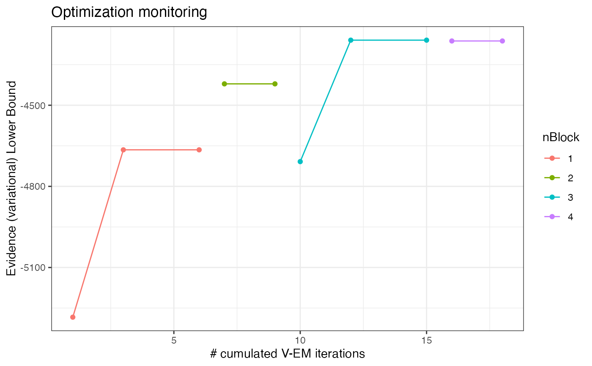
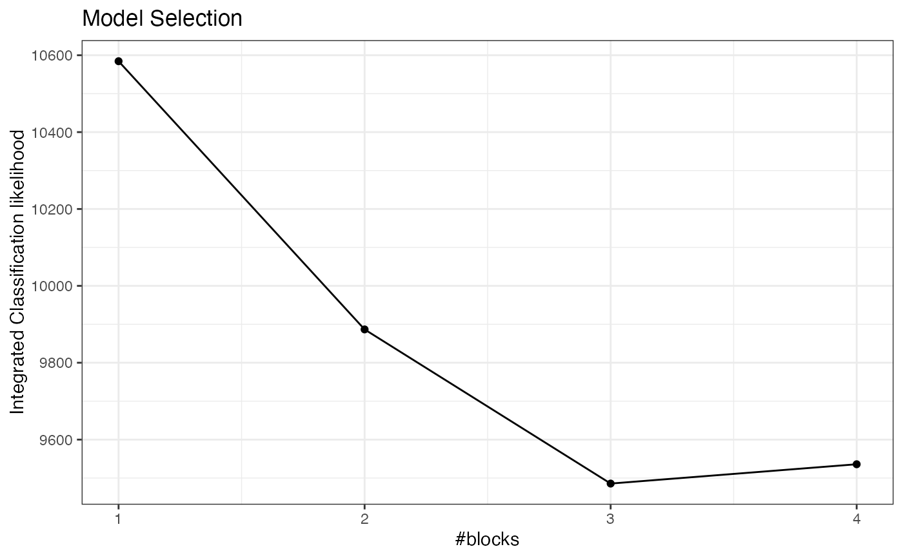
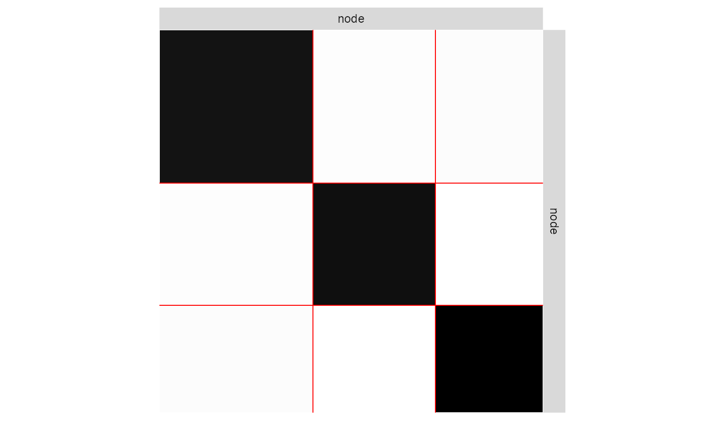
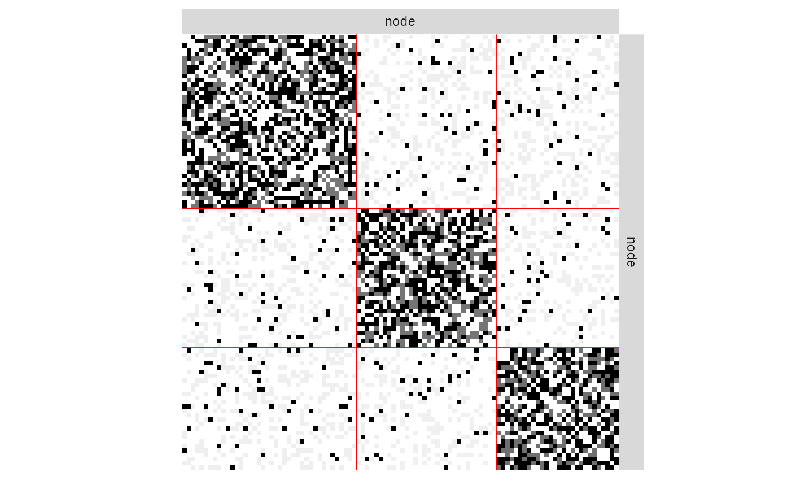
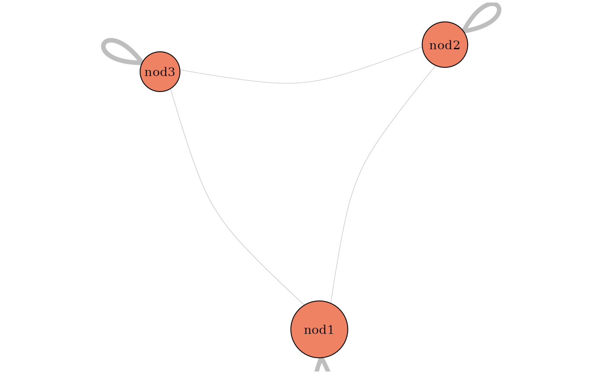

Variational EM inference of Stochastic Block Models indexed by block number from a partially observed network.
Usage
estimateMissSBM(
adjacencyMatrix,
vBlocks,
sampling,
covariates = list(),
control = missSBM_param()
)Arguments
- adjacencyMatrix
The N x N adjacency matrix of the network data. If
adjacencyMatrixis symmetric, we assume an undirected network with no loop; otherwise the network is assumed to be directed.- vBlocks
The vector of number of blocks considered in the collection.
- sampling
The model used to described the process that originates the missing data: MAR designs ("dyad", "node","covar-dyad","covar-node","snowball") and MNAR designs ("double-standard", "block-dyad", "block-node" , "degree") are available. See details.
- covariates
An optional list with M entries (the M covariates). If the covariates are node-centered, each entry of
covariatesmust be a size-N vector; if the covariates are dyad-centered, each entry ofcovariatesmust be N x N matrix.- control
a list-like structure for controlling advanced features, with default generated by
missSBM_param. See the associated documentation for details.
Value
Returns an R6 object with class missSBM_collection.
Details
Internal functions use future_lapply, so set your plan to 'multisession' or
'multicore' to use several cores/workers.
The different sampling designs are split into two families in which we find dyad-centered and node-centered samplings. See doi:10.1080/01621459.2018.1562934 for a complete description.
Missing at Random (MAR)
dyad parameter = p = Prob(Dyad(i,j) is observed)
node parameter = p = Prob(Node i is observed)
covar-dyad": parameter = beta in R^M, such that Prob(Dyad (i,j) is observed) = logistic(parameter' covarArray (i,j, .))
covar-node": parameter = nu in R^M such that Prob(Node i is observed) = logistic(parameter' covarMatrix (i,)
snowball": parameter = number of waves with Prob(Node i is observed in the 1st wave)
Missing Not At Random (MNAR)
double-standard parameter = (p0,p1) with p0 = Prob(Dyad (i,j) is observed | the dyad is equal to 0), p1 = Prob(Dyad (i,j) is observed | the dyad is equal to 1)
block-node parameter = c(p(1),...,p(Q)) and p(q) = Prob(Node i is observed | node i is in cluster q)
block-dyad parameter = c(p(1,1),...,p(Q,Q)) and p(q,l) = Prob(Edge (i,j) is observed | node i is in cluster q and node j is in cluster l)
Examples
## SBM parameters
N <- 100 # number of nodes
Q <- 3 # number of clusters
pi <- rep(1,Q)/Q # block proportion
theta <- list(mean = diag(.45,Q) + .05 ) # connectivity matrix
## Sampling parameters
samplingParameters <- .75 # the sampling rate
sampling <- "dyad" # the sampling design
## generate a undirected binary SBM with no covariate
sbm <- sbm::sampleSimpleSBM(N, pi, theta)
## Uncomment to set parallel computing with future
## future::plan("multicore", workers = 2)
## Sample some dyads data + Infer SBM with missing data
collection <-
observeNetwork(sbm$networkData, sampling, samplingParameters) %>%
estimateMissSBM(vBlocks = 1:4, sampling = sampling)
#>
#>
#> Adjusting Variational EM for Stochastic Block Model
#>
#> Imputation assumes a 'dyad' network-sampling process
#>
#> Initialization of 4 model(s).
#> Performing VEM inference
#> Model with 3 blocks.
Model with 1 blocks.
Model with 4 blocks.
Model with 2 blocks.
Polishing (node-swap)
#>
#> Looking for better solutions
#> Pass 1 Going forward +++
Pass 1 Going backward +++
plot(collection, "monitoring")

plot(collection, "icl")

collection$ICL
#> [1] 10584.442 9886.688 9485.626 9535.876
coef(collection$bestModel$fittedSBM, "connectivity")
#> $mean
#> [,1] [,2] [,3]
#> [1,] 0.50247919 0.05509355 0.05696972
#> [2,] 0.05509355 0.50953677 0.05164995
#> [3,] 0.05696972 0.05164995 0.53003541
#>
myModel <- collection$bestModel
plot(myModel, "expected")
#> Warning: `aes_string()` was deprecated in ggplot2 3.0.0.
#> ℹ Please use tidy evaluation idioms with `aes()`.
#> ℹ See also `vignette("ggplot2-in-packages")` for more information.
#> ℹ The deprecated feature was likely used in the sbm package.
#> Please report the issue at <https://github.com/GrossSBM/sbm/issues>.
#> Warning: Using `size` aesthetic for lines was deprecated in ggplot2 3.4.0.
#> ℹ Please use `linewidth` instead.
#> ℹ The deprecated feature was likely used in the sbm package.
#> Please report the issue at <https://github.com/GrossSBM/sbm/issues>.

plot(myModel, "imputed")

plot(myModel, "meso")

coef(myModel, "sampling")
#> [1] 0.7553535
coef(myModel, "connectivity")
#> $mean
#> [,1] [,2] [,3]
#> [1,] 0.50247919 0.05509355 0.05696972
#> [2,] 0.05509355 0.50953677 0.05164995
#> [3,] 0.05696972 0.05164995 0.53003541
#>
predict(myModel)[1:5, 1:5]
#> 5 x 5 sparse Matrix of class "dgCMatrix"
#>
#> [1,] . . 0.05164995 . .
#> [2,] . . 1.00000000 1.00000000 .
#> [3,] 0.05164995 1 . 1.00000000 .
#> [4,] . 1 1.00000000 . 0.05509355
#> [5,] . . . 0.05509355 .